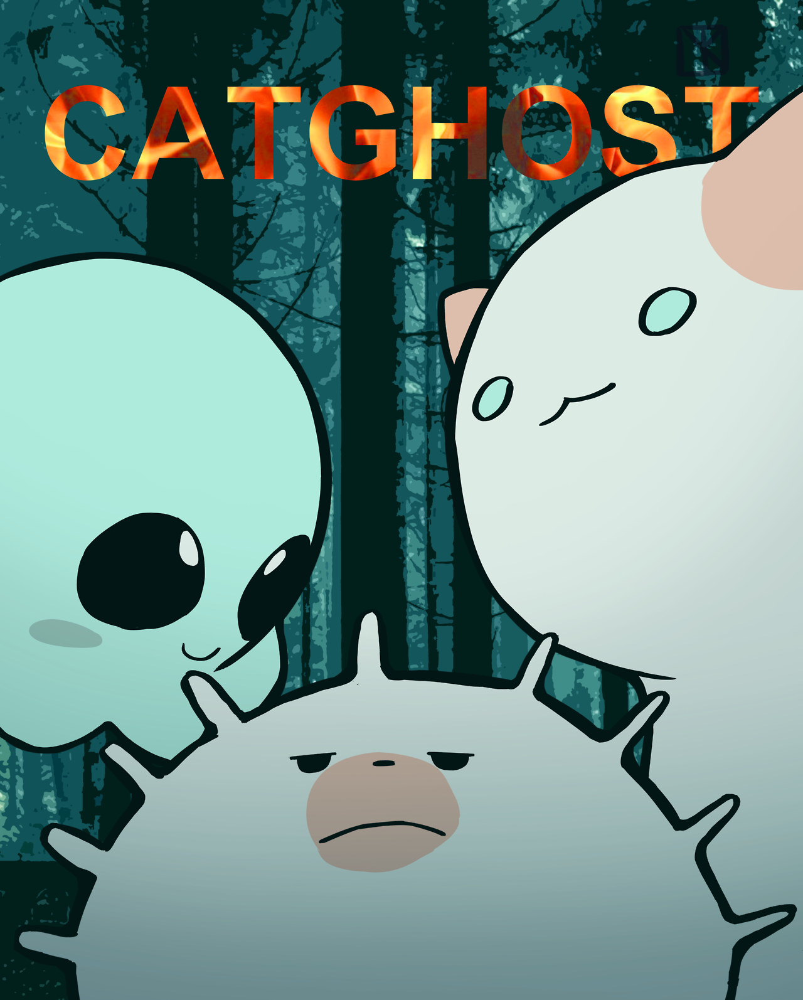
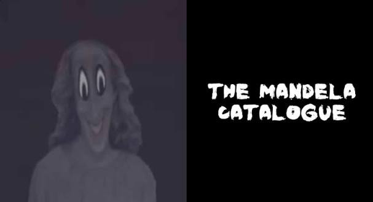
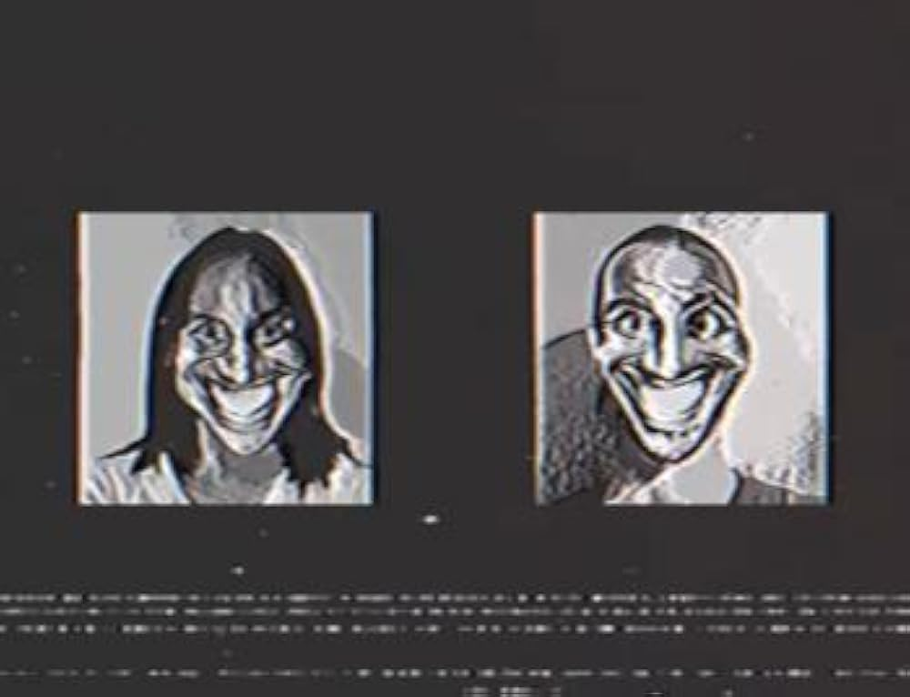
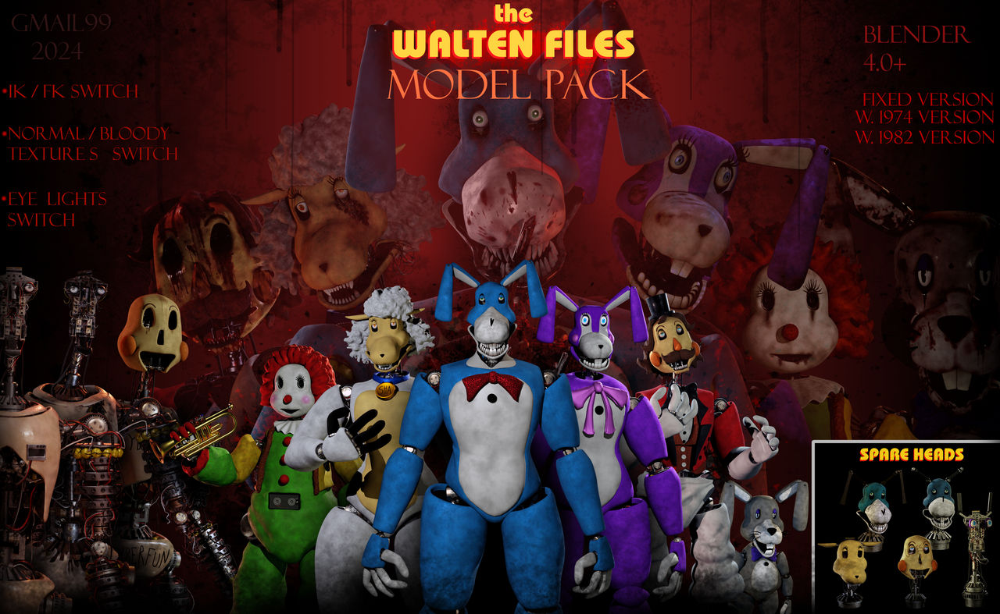
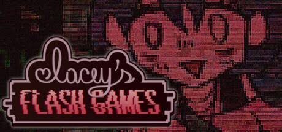
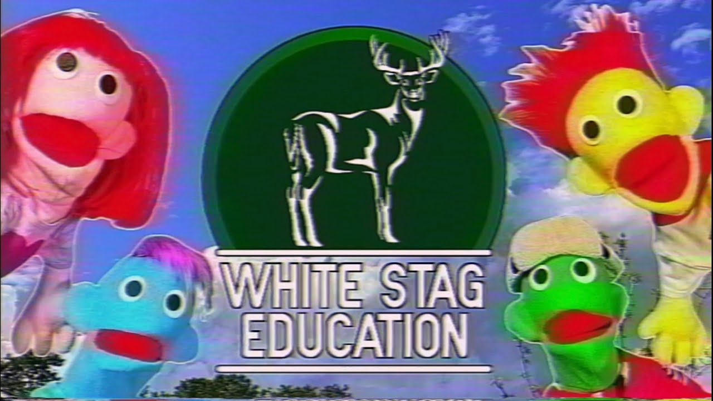
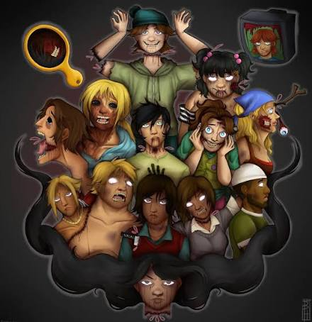

O gênero de Analog Horror utiliza a estética retro das fitas VHS, transmissões de TV antigas e jogos antigos para criar uma atmosfera assustadora, nostálgica e perturbadora através do mistério e do terror psicológico. Nesta lista além de conter meus Analog horrors favoritos também terá os meus videos de teorias favoritos e imagens para melhor experiencia.
Minhas Obras Favoritas do Gênero:
Catghost
Mandela Catalogue
The Smile Tapes
The Walten Files
Lacey's Flash Games
Stranger Danger Puppet Show
Island Of The Slaughtered
Uma websérie animada que mistura estética de jogos clássicos em 16-bit com elementos surreais e perturbadores, acompanhando os personagens Naida e Elon enquanto exploram temas de morte, luto e mistérios interativos.

Ambientada no condado fictício de Mandela, a série utiliza o formato de vídeos instrucionais e alertas governamentais para retratar a ameaça dos "Alternativos"—entidades sobrenaturais que usam tortura psicológica para tomar vidas.

Apresentada como uma coleção de fitas VHS de treinamento e relatórios médicos dos anos 1990, foca no surto da "Smidroam" (Smile Drug), uma substância que altera violentamente o comportamento e deixa as vítimas com um sorriso macabro permanente.

Inspirada em Five Nights at Freddy's, narra a história da Bunny's Kids Corporation e o desaparecimento misterioso de pessoas, revelando tragédias familiares e espíritos presos dentro de animatrônicos por meio de fitas VHS.

Uma série que simula jogos em Flash infantis dos anos 2000 estrelados por Lacey, mas que rapidamente se degenera em pesadelos visuais abordando traumas graves, perseguição, paranoia e dinâmicas tóxicas.

Estilizada como um show de fantoches educativo infantil de televisão antiga, a série quebra a ilusão com mensagens ocultas, sequestros reais e uma atmosfera de desconforto psicológico contínuo.

Um analog horror no estilo de animações dos anos 2000 que reimagina o reality show Drama Total em um cenário macabro, onde os participantes enfrentam desfechos grotescos, eliminações letais e assassinatos misteriosos.

Quer saber mais sobre o gênero? Visite studiobinder Analog Horror.